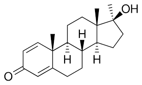

El Dianabol (metandrostenolona) es un esteroide anabólico cuya comercialización está regulada en muchos países. Su uso legal se limita a indicaciones médicas específicas, por lo que solo puede obtenerse bajo prescripción de un profesional de la salud y a través de canales farmacéuticos autorizados, en los lugares donde su uso esté permitido. La venta sin receta o mediante medios informales —como internet, redes sociales o dentro del ámbito del gimnasio— es ilegal y representa un riesgo importante. Estos productos pueden ser falsificados, estar contaminados o contener dosis desconocidas, lo que puede afectar gravemente la salud. Por este motivo, es fundamental evitar el mercado negro y no consumir este tipo de sustancias sin control médico. Ante cualquier duda, lo recomendable es consultar con un profesional de la salud y optar por métodos seguros y legales para mejorar el rendimiento físico.
El Dianabol (metandrostenolona) es un esteroide anabólico conocido por producir cambios físicos rápidos, especialmente en el contexto del entrenamiento de fuerza y el culturismo. Entre los efectos más buscados se encuentran el aumento acelerado de la masa muscular, la mejora en la fuerza y una recuperación más rápida entre sesiones de entrenamiento. También puede generar una mayor retención de líquidos, lo que da una apariencia de mayor volumen corporal en poco tiempo. Sin embargo, estos efectos no están exentos de riesgos. El Dianabol puede afectar negativamente al organismo, especialmente cuando se utiliza sin control médico. Uno de los principales problemas es el daño hepático, ya que se trata de una sustancia que se procesa en el hígado. Además, puede alterar el equilibrio hormonal, provocando la disminución de la producción natural de testosterona. Otros efectos secundarios incluyen el aumento de la presión arterial, cambios en los niveles de colesterol, acné, piel grasa, caída del cabello en personas predispuestas y ginecomastia (desarrollo de tejido mamario en hombres). También pueden presentarse cambios en el estado de ánimo, como irritabilidad o agresividad. Es importante tener en cuenta que muchos de los resultados obtenidos con su uso pueden no ser sostenibles en el tiempo. Al dejar de consumir la sustancia, es común perder parte del peso ganado, especialmente el relacionado con la retención de líquidos. En conclusión, aunque el Dianabol puede generar resultados visibles en poco tiempo, su impacto en la salud puede ser significativo. Por ello, es fundamental priorizar métodos seguros y sostenibles para el desarrollo físico, basados en el entrenamiento, la alimentación y el descanso adecuado.